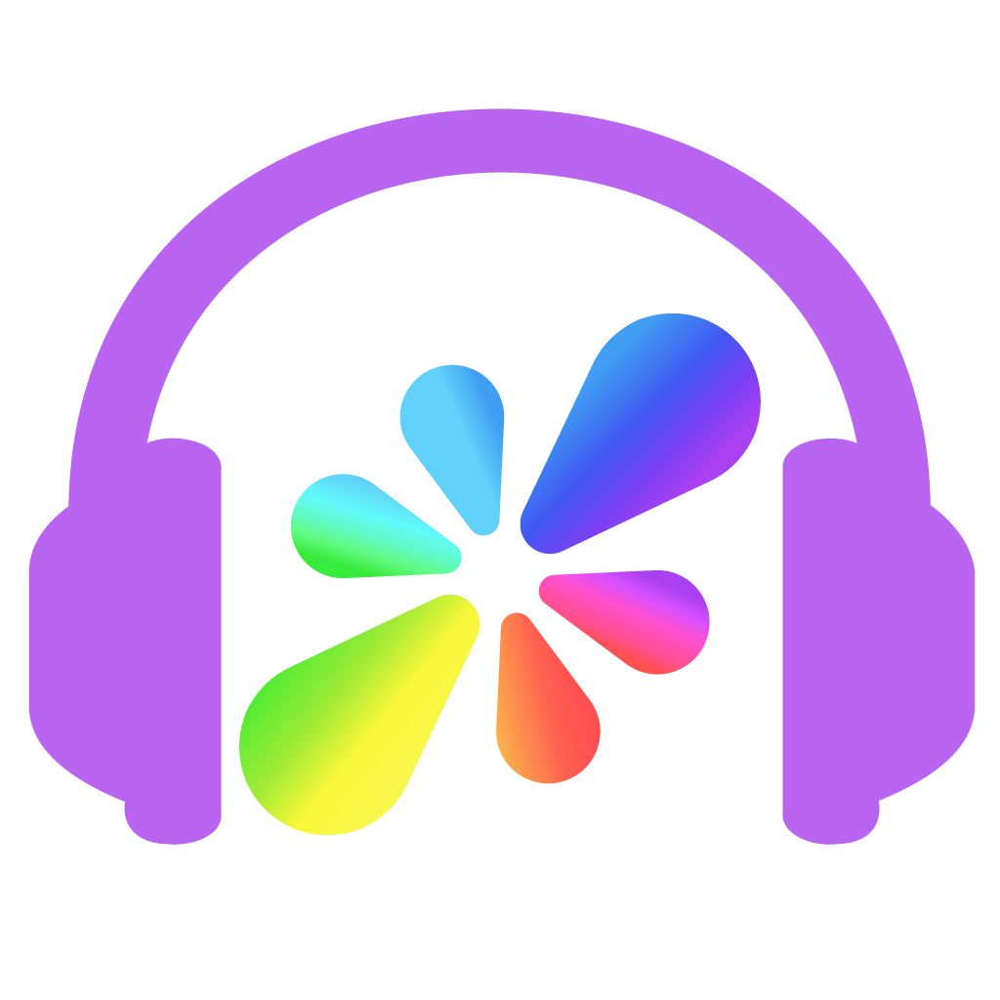

VOICE-FIRST DESKTOP CLIENT FOR RESONITE
Resoniteを通話アプリとして使いたい。そう思ったこと、一度はありますよね？
01
通話に最適化された軽量設計で快適な会話をサポート
02
AudioClientでの利用に最適な機能を備えた専用ワールドでグラフィカルクライアントとチャットや画像のやりとりが可能
03
グラフィカルクライアントとの同時起動にも対応